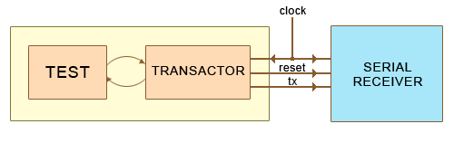

The purpose of the Serial Receiver sample design is to present the very basic transaction level modeling methods in testbench development. An HDL design of simplified serial data receiver is stimulated by a transactional testbench via a so called transactor.
The C/C++ Configuration file included in the design (testwrapper.dlm) is optimized for simulation speed and does not generate the debugging information.
In order to use the C Code Debug feature, the -O2 switch should be replaced with -ggdb in the Compilation options edit box of the C/C++ Configuration.
The goal is to verify the operation of an RT level description of serial receiver. The unit under test receives data over the tx line with respect to the rising edge of the clock signal.
A synthesizable description of the serial receiver (rcv) is implemented in VHDL/Verilog. It consists of a serial-in-parallel-out shift register collecting the data sent through the tx signal (rcv_reg), a synchronization circuit that detects that a valid byte has arrived (synchronizer) and a register that holds the last received byte (latched_val). The latched_val register contains piece of code, that prints the received character to the console window.
A testing module is described in SystemC. The wrapper provides an interface for connecting the instantiated test module and the transactor to the tested entity.
The transactor class provides two methods that translate function calls to certain activity of the tx and reset signals. The test can focus on certain actions i.e. function calls instead of toggling particular signals.
The test module executes following scenario. First, the initialize() transactor method is called to reset receiver registers and the synchronizing circuit. After that, the send_message("This is an example of SystemC Transaction Level testbench.") function call is used to verify functionality of the receiver.
The test environment is assembled on a Block Diagram (test_env.bde). It instantiates and connects the test wrapper and the tested receiver. Functionally it implements the idea presented in Figure 1.

Figure 1. Test environment diagram